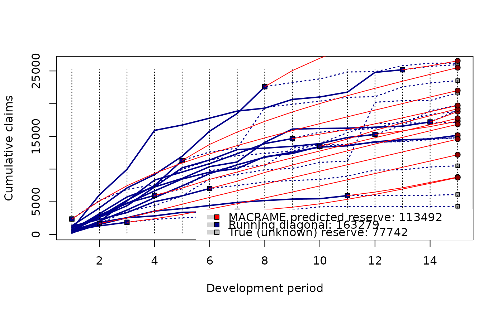
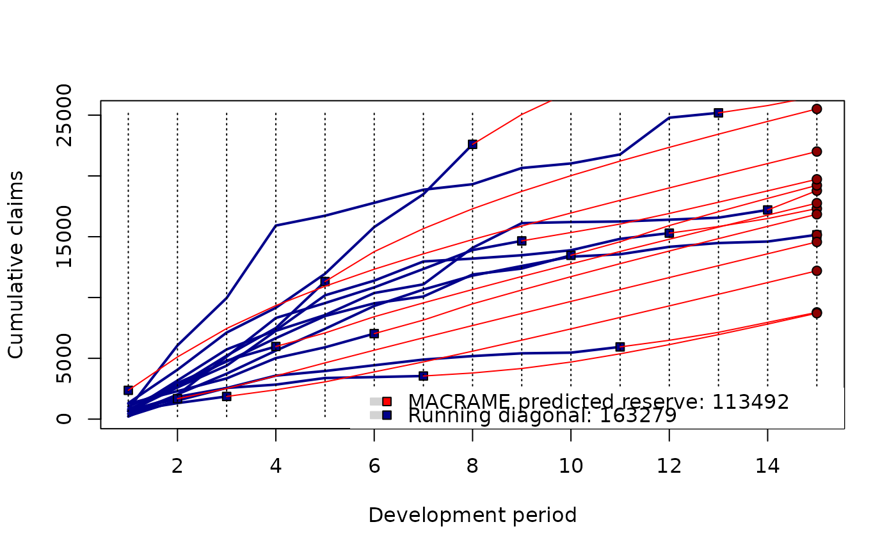
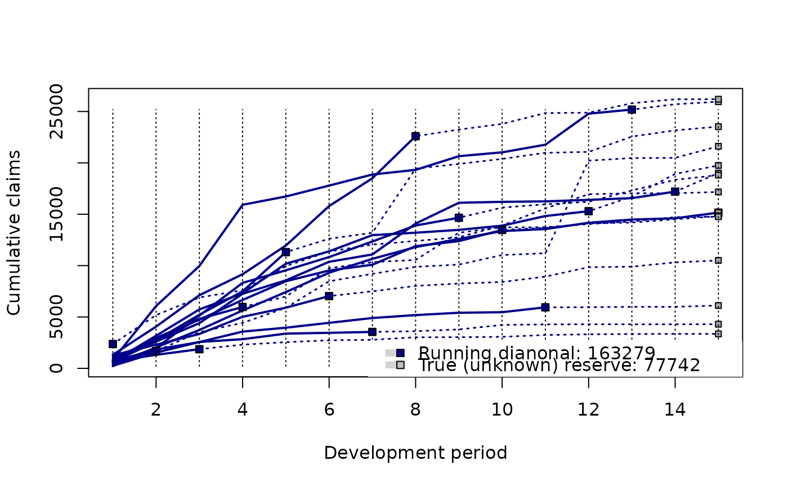

The function provides a graphical representation of the functional profiles
estimated by the PARALLAX, REACT, or MACRAME algorithm (see Maciak,
Mizera, and Pesta (2022) for further details). The function takes an object
of the class profileLadder which is the output of the
parallelReserve() function or the mcReserve() function.
Alternatively, the function can be also applied to visualise the run-off triangle
itself—if the triangle is of the class profileLadder.
Usage
# S3 method for class 'profileLadder'
plot(
x,
xlab = "Development period",
ylab = "Cumulative claims",
main = "",
default.legend = TRUE,
...
)Arguments
- x
an object of the class
profileLadder(output formparallelReserve(),mcReserve(), oras.profileLadder()- xlab
label for the x axis
- ylab
label for the y axis
- main
title of the plot
- default.legend
logical to indicate whether a default plot legend (utilizing the information from the R class
profileLadder) should be provided (DEFAULT)- ...
other graphical parameters to plot
Value
A graph with the observed functional development profiles from the input run-off triangle, the estimated/predicted functional segments (i.e., functional profile completion provided by the corresponding estimation method—PARALLAX, REACT, or MACRAME) the and the true future profiles (if these are available)
Examples
## completed run-off triangle with the 'unknown' (future) payments
print(triangle <- GFCIB$bodilyInjury[1:15, 1:15])
#> dev
#> origin 1 2 3 4 5 6 7 8 9 10 11 12
#> 2008_Q1 210 2040 3735 5633 7425 9307 10657 11803 12593 13359 13558 14168
#> 2008_Q2 628 2610 4394 7260 8562 10370 11083 14087 16116 16205 16252 16400
#> 2008_Q3 828 6064 9962 15918 16728 17788 18866 19317 20651 21024 21768 24789
#> 2008_Q4 642 3174 5733 7300 10183 11389 12965 13201 13477 13888 14825 15295
#> 2009_Q1 686 1831 2558 3576 3956 4429 4897 5185 5410 5466 5939 5953
#> 2009_Q2 429 2968 4734 6656 8479 9524 10085 11894 12384 13470 13681 14113
#> 2009_Q3 435 1994 5136 8318 9542 10834 12348 13904 14658 15644 15966 16215
#> 2009_Q4 1319 4062 7117 9160 11955 15795 18500 22596 23239 23791 24848 24885
#> 2010_Q1 250 1533 2566 2838 3381 3457 3546 3618 3788 4226 4278 4288
#> 2010_Q2 1264 2303 3346 5017 5905 7031 7495 8023 8256 8406 8927 9845
#> 2010_Q3 1032 2736 5216 7491 11314 12614 13193 19440 19896 20387 20979 21069
#> 2010_Q4 806 2607 4811 5973 6988 9749 10335 10551 13202 13721 13736 14039
#> 2011_Q1 674 1317 1864 2308 2546 2732 2781 3025 3035 3065 3246 3313
#> 2011_Q2 633 1680 3525 4424 5889 8475 9197 9879 10099 11027 11207 20216
#> 2011_Q3 2368 5186 6896 7601 9947 11374 12048 12397 12752 13907 15568 16946
#> dev
#> origin 13 14 15
#> 2008_Q1 14482 14604 15157
#> 2008_Q2 16568 17202 19003
#> 2008_Q3 25186 25704 25956
#> 2008_Q4 16709 18926 19748
#> 2009_Q1 5984 5987 6115
#> 2009_Q2 14191 14505 14820
#> 2009_Q3 17311 18352 18808
#> 2009_Q4 25804 26195 26195
#> 2010_Q1 4288 4288 4296
#> 2010_Q2 9896 10315 10501
#> 2010_Q3 22559 23164 23526
#> 2010_Q4 14295 14718 14760
#> 2011_Q1 3340 3354 3354
#> 2011_Q2 20466 20486 21614
#> 2011_Q3 17043 17045 17168
plot(mcReserve(triangle))

## completed run-off triangle with unknown future
print(observed(triangle))
#> dev
#> origin 1 2 3 4 5 6 7 8 9 10 11 12
#> 2008_Q1 210 2040 3735 5633 7425 9307 10657 11803 12593 13359 13558 14168
#> 2008_Q2 628 2610 4394 7260 8562 10370 11083 14087 16116 16205 16252 16400
#> 2008_Q3 828 6064 9962 15918 16728 17788 18866 19317 20651 21024 21768 24789
#> 2008_Q4 642 3174 5733 7300 10183 11389 12965 13201 13477 13888 14825 15295
#> 2009_Q1 686 1831 2558 3576 3956 4429 4897 5185 5410 5466 5939 NA
#> 2009_Q2 429 2968 4734 6656 8479 9524 10085 11894 12384 13470 NA NA
#> 2009_Q3 435 1994 5136 8318 9542 10834 12348 13904 14658 NA NA NA
#> 2009_Q4 1319 4062 7117 9160 11955 15795 18500 22596 NA NA NA NA
#> 2010_Q1 250 1533 2566 2838 3381 3457 3546 NA NA NA NA NA
#> 2010_Q2 1264 2303 3346 5017 5905 7031 NA NA NA NA NA NA
#> 2010_Q3 1032 2736 5216 7491 11314 NA NA NA NA NA NA NA
#> 2010_Q4 806 2607 4811 5973 NA NA NA NA NA NA NA NA
#> 2011_Q1 674 1317 1864 NA NA NA NA NA NA NA NA NA
#> 2011_Q2 633 1680 NA NA NA NA NA NA NA NA NA NA
#> 2011_Q3 2368 NA NA NA NA NA NA NA NA NA NA NA
#> dev
#> origin 13 14 15
#> 2008_Q1 14482 14604 15157
#> 2008_Q2 16568 17202 NA
#> 2008_Q3 25186 NA NA
#> 2008_Q4 NA NA NA
#> 2009_Q1 NA NA NA
#> 2009_Q2 NA NA NA
#> 2009_Q3 NA NA NA
#> 2009_Q4 NA NA NA
#> 2010_Q1 NA NA NA
#> 2010_Q2 NA NA NA
#> 2010_Q3 NA NA NA
#> 2010_Q4 NA NA NA
#> 2011_Q1 NA NA NA
#> 2011_Q2 NA NA NA
#> 2011_Q3 NA NA NA
plot(mcReserve(observed(triangle)))

## the run-off triangle with future payments without MACRAME completion
plot(as.profileLadder(triangle))
